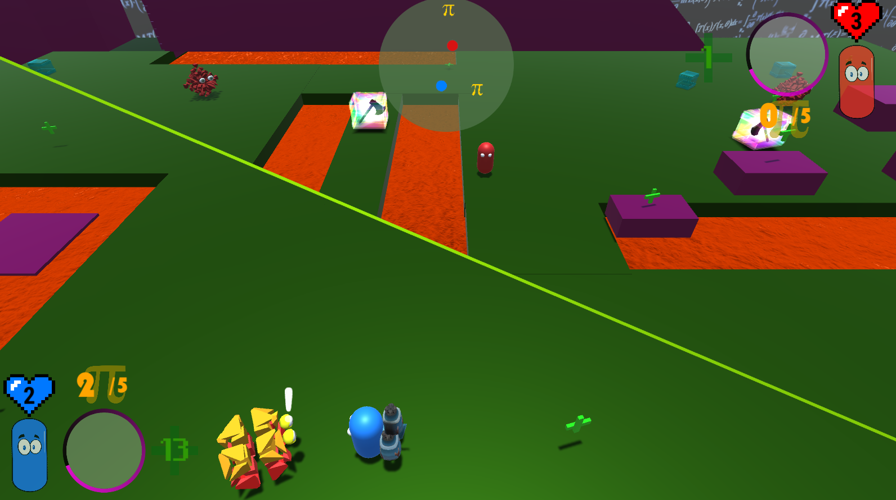

Sondre Agledahl
Video game portfolio
Development time: 1.5 months (Dec 2017-Jan 2018)
Development tools: Unity / C#
Project type: Spare time solo project
Platform: Windows, Mac OS, Linux & Web
Download link: https://colonelsalt.itch.io/cylinderbattle
Gameplay video
Development details
Dynamically splitting and rotating split-screen
The game uses a "Voronoi" split-screen: Two players share a single screen when close together, but the screen dynamically splits in half (along a line normal to the midpoint between them) when they are far apart from each other.
This feature works using two Unity cameras and a DepthMask shader: When the screen split is active, each camera follows a single player and both render to the screen on top of each other. A quad equipped with the mask shader covers one half of the second camera so the image from the first camera renders through it, giving the appearance of a splitscreen.
As the players move around, the screen mask rotates dynamically to keep the split perpendicular to the distance vector between the two players. This ensures the screen space distance between them remains constant, and gives each player equal screen real estate at all times.
See the code sample below for implementation details:
CameraManager.cs
using System.Collections; using System.Collections.Generic; using UnityEngine; // Manages camera movement; toggles between midpoint-centred single camera and dynamically rotating split-screen (Voronoi) using shader mask public class CameraManager : MonoBehaviour { // -------------------------------------------------------------- // How far apart Players have to be (from midpoint) for split screen to activate [SerializeField] private float m_SplitDistance = 9f; // Distance to maintain between Players and each camera [SerializeField] private float m_CameraDistance = 20f; // Distance in front of secondary camera to place render mask [SerializeField] private float m_MaskOffset; // Mask to place in front of secondary camera to display primary camera feed through [SerializeField] private GameObject m_SplitScreenMask; // Follows both Players when in range; Player 1 when split screen active [SerializeField] private Camera m_PrimaryCamera; // Deactivated when both Players in range; follows Player 2 when split screen active [SerializeField] private Camera m_SecondaryCamera; // References to Player Transforms to track positions [SerializeField] private Transform m_Player1, m_Player2; // -------------------------------------------------------------- // Midpoint between Players private Vector3 m_Midpoint; // Offset from Player to place camera to allow room for both screens // NOTE: This is camera1's offset from Player 1 (camera2's offset from P2 is -m_CameraOffset) private Vector3 m_CameraOffset; // Whether split screen is currently active private bool m_SplitScreenActive = false; // -------------------------------------------------------------- private void Awake() { m_SecondaryCamera.enabled = false; } private void LateUpdate() { m_Midpoint = (m_Player1.position + m_Player2.position) / 2f; // Check if Players are far enough apart to split screen float distanceFromMiddle = Vector3.Distance(m_Midpoint, m_Player1.position); if (!m_SplitScreenActive && distanceFromMiddle >= m_SplitDistance) { SetSplitScreenActive(true); } else if (m_SplitScreenActive && distanceFromMiddle < m_SplitDistance) { SetSplitScreenActive(false); } if (m_SplitScreenActive) { /* Because each camera frustum captures the entire (16:9) screen, we do NOT want players * centred in their respective views. Rather, we want each camera to follow each player, * offset by exactly the length of the minimum split distance. * This makes the transition from shared screen to split screen perfectly seamless (no jarring jumps).*/ m_CameraOffset = (m_Midpoint - m_Player1.position).normalized * m_SplitDistance; PositionCameras(); RotateScreenMask(); } else { // If splitscreen not active, just place primary camera at midpoint (minus forward distance specified) m_PrimaryCamera.transform.position = m_Midpoint - (m_PrimaryCamera.transform.forward * m_CameraDistance); // Update secondary camera position as well (needed for correct screen space coordinates for TutorialManager) m_SecondaryCamera.transform.position = m_PrimaryCamera.transform.position; } } // Activate or de-activate secondary camera and shader mask private void SetSplitScreenActive(bool active) { m_SplitScreenActive = active; m_SecondaryCamera.enabled = active; m_SplitScreenMask.SetActive(active); } private void PositionCameras() { /* Place cameraX at PX's position, offset by the horizontal distance from PX (m_CameraOffset), * and the vertical distance from the world (m_CameraDistance)*/ m_PrimaryCamera.transform.position = m_Player1.position + m_CameraOffset - (m_PrimaryCamera.transform.forward * m_CameraDistance); // Subtract because Player 2 is in opposite direction m_SecondaryCamera.transform.position = m_Player2.position - m_CameraOffset - (m_SecondaryCamera.transform.forward * m_CameraDistance); } private void RotateScreenMask() { m_SplitScreenMask.transform.rotation = m_SecondaryCamera.transform.rotation; // Perpendicular between Player 2's screen space position and screen midpoint Vector3 normal = m_SecondaryCamera.WorldToScreenPoint(m_Midpoint) - m_SecondaryCamera.WorldToScreenPoint(m_Player2.position); // Rotate mask away from camera by angle formed by normal vector float angle = Mathf.Atan2(normal.y, normal.x) * Mathf.Rad2Deg; m_SplitScreenMask.transform.Rotate(m_SplitScreenMask.transform.forward, angle, Space.World); // Shift mask over by half its width so it covers half of secondary camera Vector3 horizontalShift = m_SplitScreenMask.transform.right * m_SplitScreenMask.transform.lossyScale.x / 2f; // Place mask in front of camera + shift m_SplitScreenMask.transform.position = m_SecondaryCamera.transform.position + (m_SecondaryCamera.transform.forward * m_MaskOffset) + horizontalShift; } }
Complete AI navigation system with different enemy behaviours
I implemented a waypoint system that works on top of Unity's navmesh to control enemies in the game. Each enemy has a dumb camera component attached and periodically checks whether a player is inside its view frustum.
When a player is in sight, the enemy temporarily stops its standard patrolling and activates its EnemyBehaviour component. These EnemyBehaviours are defined through an interface to allow for easy extensibility (two different enemy behaviours are currently defined in the game).
Dynamic tutorial system and persistent achievements
The first time the player encounters a new weapon or powerup, and on-screen tutorial prompt appears next to them. Certain actions also trigger achievements that show up as notifications and are viewable from the game's main menu.
An Observer-Listener system manages these behaviours. Seperate Tutorial and Achievement managers respond to player-triggered events and queue up appropriate screen notifications. A safe wrapper around Unity's PlayerPrefs system provides for persistent storage.